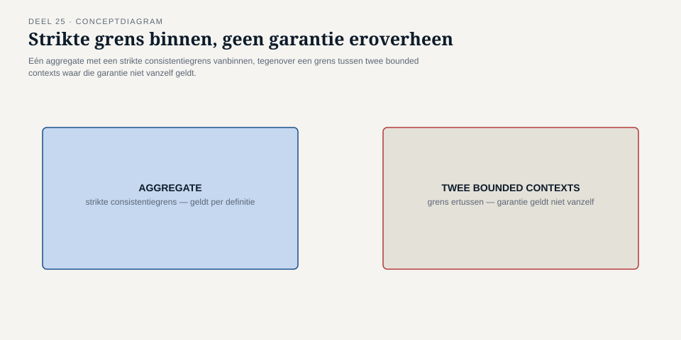
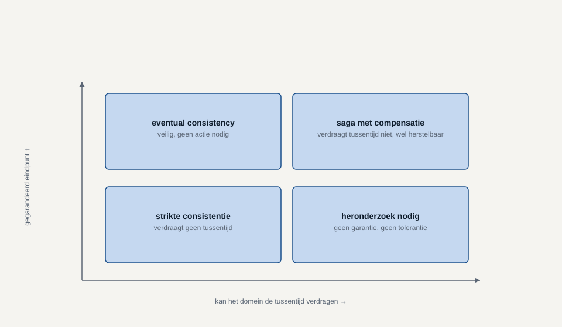
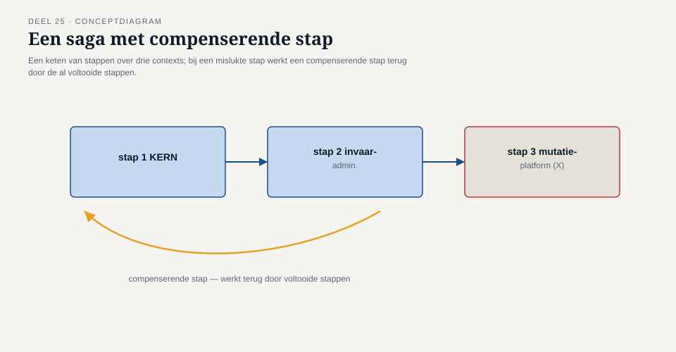
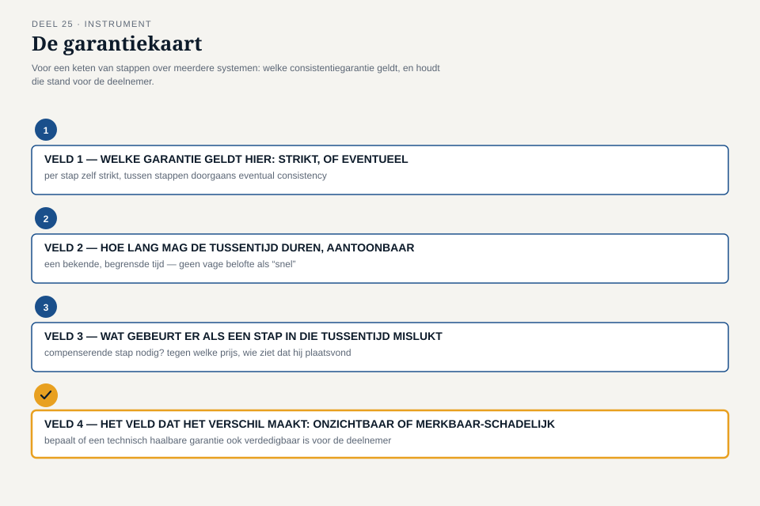

Deel 25 — Consequenties van bounded contexts voor consistentie: eventual consistency en sagas, conceptueel
Slidedeck · Ductus-cursus Domain-Driven Design · niveau 3 (expert) · deel 25 van 30 · 27 slides
Slide 1 — Titel
Domain-Driven Design — deel 25 Consequenties van bounded contexts voor consistentie: eventual consistency en sagas Niveau 3: expert
Slide 2 — Waar we staan
Deel 24: KERN saneren, stuk voor stuk. Vera’s slotvraag: wat weet elk stuk, zolang niet alles hetzelfde weet?
Slide 3 — Otto’s schets
Eén nachtelijke batch. KERN, invaaradministratie, Mutatieplatform — “dan is alles op hetzelfde moment consistent.”
Slide 4 — Foppe
“En in de nachten ertussen — wat weet het Mutatieplatform dan over een deelnemer die al wel is ingevaren, maar nog niet geregistreerd?”
Slide 5 — Otto, later
“Ik dacht dat ‘consistent’ een ding is dat je hebt of niet hebt. Het is een vraag die je per situatie opnieuw moet stellen.”
Slide 6 — Wat dit deel oplevert
- Bounded context als consistentiegrens
- Eventual consistency: wat je wint, wat je opgeeft
- Sagas: slagen of eerlijk mislukken
- De garantiekaart
Slide 7 — Let op
Dit deel: het domeinperspectief. Niet: hoe je het implementeert. Techniek ↗ database-/architectuurcursus.
Slide 8 — Binnen één context
Eén aggregate, één transactie: alles of niets, gegarandeerd.
Slide 9 — Over de grens heen
Twee contexts, twee modellen, vaak twee teams. Geen technische transactie strekt zich uit over beide.
Slide 10 —

Strikte consistentiegrens binnen een aggregate, versus de grens tussen twee contexts
Slide 11 — Eventual consistency
Tijdelijk een andere waarheid — mits een gegarandeerd eindpunt, en het domein de tussentijd verdraagt.
Slide 12 — Vraag 1
Kan het domein de tussentijd verdragen? Adreswijziging: ja. Twee aanspraken tegelijk actief: nee.
Slide 13 — Vraag 2
Is er een gegarandeerd, eindig herstelmoment? “Uiteindelijk” is geen antwoord voor DNB. “Binnen zoveel uur, aantoonbaar” wel.
Slide 14 —

Twee assen, vier kwadranten: verdraagbaar × gegarandeerd eindpunt
Slide 15 — Sagas
Stappen over meerdere contexts, elk binnen eigen garantie. Wat als er één mislukt?
Slide 16 — Geen rollback — compensatie
Eerdere stappen zijn al definitief. Terugdraaien = een nieuwe, expliciete corrigerende actie.
Slide 17 — Compensatie is een domeinbeslissing
Niet: “doe alsof het niet gebeurde.” Wel: een nieuwe gebeurtenis, met eigen betekenis en zichtbaarheid.
Slide 18 — Twee vragen per stap
Is deze stap compenseerbaar — tegen welke prijs? Wie ziet dat er gecompenseerd is, en wanneer?
Slide 19 —

Een saga als keten over drie contexts, met een compenserende stap bij falen
Slide 20 — De garantiekaart, veld 1
Welke garantie geldt hier: strikt, of eventueel?
Slide 21 — De garantiekaart, veld 2
Hoe lang mag de tussentijd duren — aantoonbaar, niet vaag?
Slide 22 — De garantiekaart, veld 3
Wat gebeurt er als een stap in die tussentijd mislukt?
Slide 23 — De garantiekaart, veld 4
Het veld dat het verschil maakt: onzichtbaar voor de deelnemer, of merkbaar en schadelijk?
Slide 24 —

De garantiekaart, vier velden, veld 4 uitgelicht
Slide 25 — Terug naar de casus
KERN → invaaradministratie: eventueel, max enkele uren, expliciete correctieboeking bij falen.
Slide 26 — Otto
“Een saga gaat net zo goed over wat we een deelnemer wél en niet mogen laten merken van iets dat wij nog aan het rechtbreien zijn.”
Slide 27 — Iris, en vooruit
“Als er straks een tweede bron van deelnemersmutaties bij dit landschap komt — geldt deze garantiekaart dan nog?” Deel 26: taal-drift bewaken over de tijd.